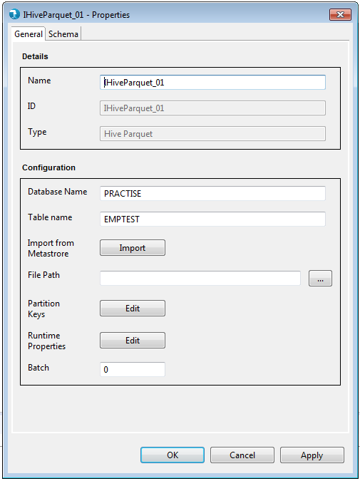
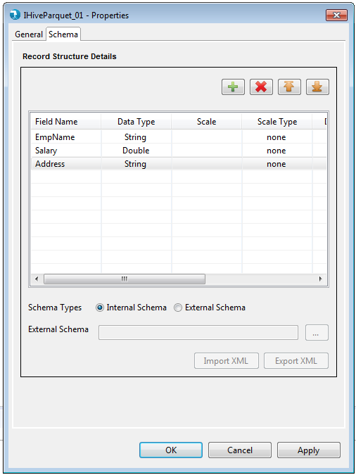

Properties for the Input Hive Parquet component can be viewed by Double click->component on canvas. The properties contain a 'General' tab and a 'Schema' tab. Common and mandatory properties are present in the General tab. Schema displays option to accept the field schema i.e. field name, Data type, scale etc.

- Name - The Name field will specify the name of the component as desired by the user.
- Base Type - Base Type signifies the basic operation area of the component. In this case it is of Base Type Input.
- Type - Type further categorizes the component to detailed operation that it intends to perform. Here it is of type Input Hive Parquet.
- Database Name - Database Name is used to specify the Hive Database Name. User has to manually type the database name in the text box provided.
- Table Name - Table Name is used to specify the Hive database table name. User has to manually type the table name in the text box provided.
- External Table Path - External Table Path is used to specify Hive Database/Table location. User has to manually type the path in the text box provided. External Table Path is an optional field.
- Partiton Keys - Partition Keys enables the user to enter user-specific partitions based on schema. Each Table can have one or more partition Keys which determines how the data is stored. Partitions - apart from being storage units - also allow the user to efficiently identify the rows that satisfy a certain criteria.User can drag and drop the fields required.Partition Keys is an optional field.
- Runtime Properties - Runtime properties are used to override the Hadoop configurations specific to Input Hive Parquet component at run time. User is required to enter the Property Name and Value in the runtime properties grid.

- Phase - Phase simply accepts a numeric value starting from 0 to maximum 99 and signifies the phase this component will execute in. By default this is 0.

Schema Types
- Internal - User is provided a Grid to enter the internal schema of the Input Delimited file.
- Field Name - User needs to enter all the Field names in this column.
- Data type - By default "string" Data type has been selected for any field added to the Grid. User can select from different Data type values like "integer", "double", "float" etc.
- Date Format - User can specify desired date format like "YY-DD-MM", "YYYYMMDD" etc for a date field in this column.
- Precision - Precision for a bigdecimal field can be specified here.
- Scale - Scale for a bigdecimal field can be specified here.
- Scale Type - Scale Type accepts values as implicit or explicit for bigdecimal field and none for other data types. Explicit considers the length of ' . ' and implicit ignores length of ' . ' for the bigdecimal field.
- Field Description - User can specify field description.
- External - User can provide an external Hydrograph Schema file of XML format. A text box is provided to either manually type or use the Browse button to select the schema file from File system. The External schema file path is resolved during run time and replaced with the contents of the file in the Job XML.